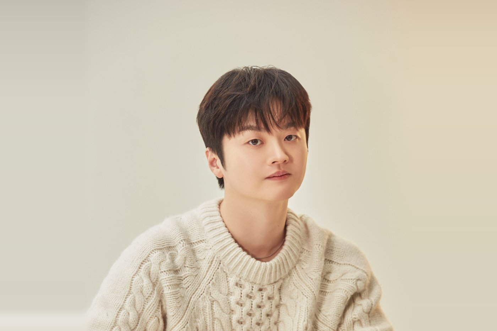
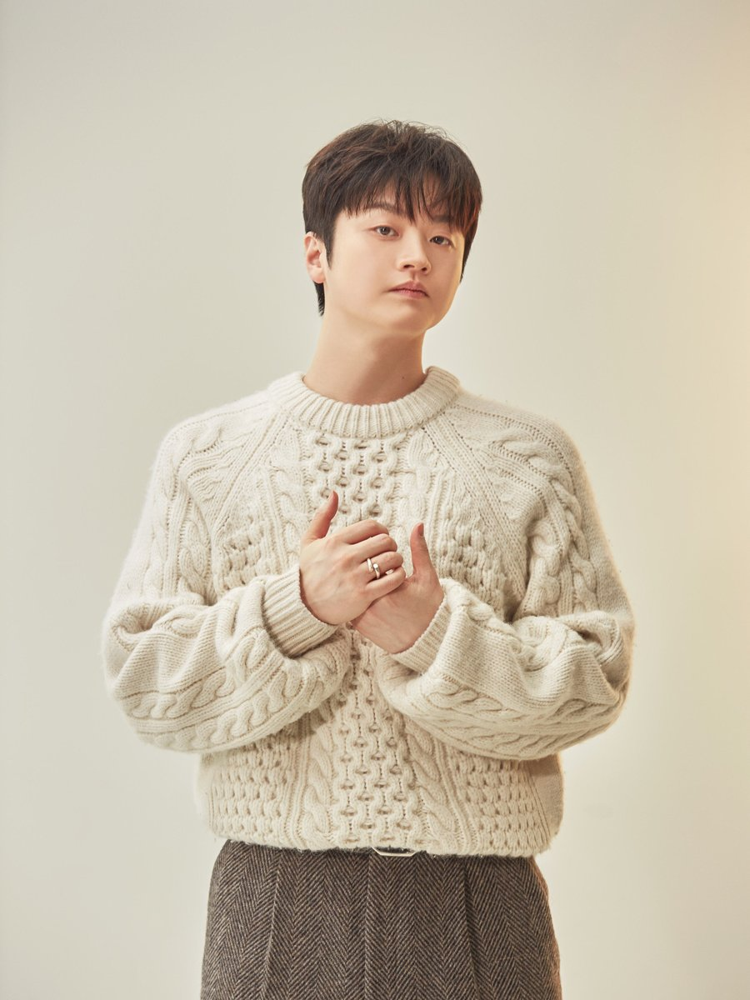
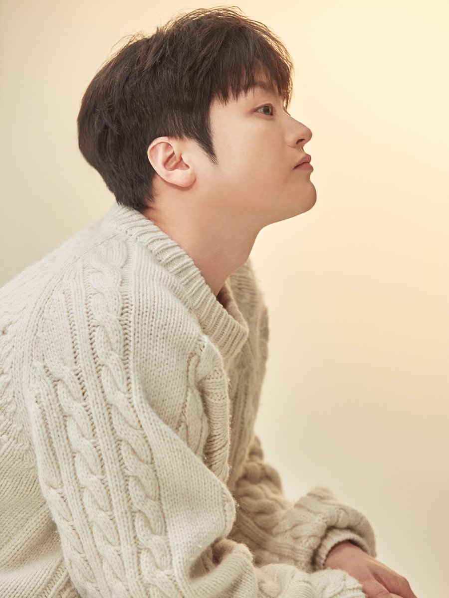

황가람은 대표곡 ‘나는 반딧불’로 국내 주요 음원차트 1위에 오르며 ‘국민 위로송’의 주인공이 된 발라드 가수입니다. 진솔한 음악과 따뜻한 음색으로 세대를 아우르는 공감을 전하고, 방송과 전국 축제·공연 무대에서 안정적인 라이브를 들려 줍니다.


주요 이력
- ‘나는 반딧불’ 6개 주요 음원차트 1위, 누적 스트리밍 1억 회
- 2025 서울가요대상 발라드상
- 2025 한류엑스포 한류 발라드상
- 2025 대한민국 예술문화인대상 대중가수상
- 2025 금영 연말결산 노래방 차트 1위
- 한터뮤직어워즈 특별상(리메이크 부문)
- ‘대한민국 문화예술대상’ K팝상
- 써클차트 BGM·통화연결음·컬러링·벨소리 차트 1위
방송 출연
- MBC 〈놀면 뭐하니?〉
- MBC 〈복면가왕〉
- KBS 〈불후의 명곡〉
- tvN 〈유 퀴즈 온 더 블럭〉
- KBS Joy 〈무엇이든 물어보살〉
대표곡
- 나는 반딧불 (2024.10)
- 미치게 그리워서 (2025.02)
- 세상이 그대를 속일지라도 (2025.04)
- 아문다 (2025.08)
- 사랑했고 사랑했고 사랑했다 (2026.02)
이런 자리에 잘 맞아요
- 축제 메인 무대·초청 공연
- 기업 행사·송년회 축하공연
- 기념식·시상식 축하 무대
섭외 진행 순서
- 문의: 날짜·장소·공연 시간 확인
- 일정 확인과 견적
- 계약: 주식회사 위메이커 명의
- 셋리스트와 음향 사전 협의
- 행사 당일 리허설과 공연
자주 묻는 질문
섭외 비용은 어떻게 정해지나요?
행사 날짜와 장소, 공연 시간, 편성에 따라 달라집니다. 날짜와 장소를 알려 주시면 일정을 확인해 견적을 보내 드립니다.
음향 장비도 준비해 주나요?
필요하면 메이커팀이 무대와 음향까지 함께 준비합니다. 행사장 음향을 쓰는 경우에는 공연 전에 장비 사양을 확인합니다.
원하는 곡을 넣을 수 있나요?
행사 성격에 맞춰 셋리스트를 제안하고, 원하시는 곡이 있으면 미리 협의해 반영합니다.